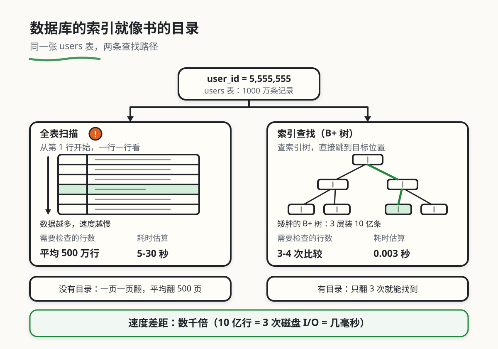

数据库原理（索引 / 事务 / 查询优化）
本章目录 · 1 节
数据库原理：索引/事务/查询优化
核心问题 为什么你的 Excel 查询要 10 秒，而淘宝搜索只要 0.01 秒？ 当数据从"几千条"变成"十亿条"，从"单人使用"变成"千万人同时访问"，Excel 就不够用了。数据库就是为解决这个问题而生的——它是专门处理海量数据、高并发访问的"超级 Excel"。本章将带你从零开始理解数据库的核心原理。
1. 数据库的动机
1.1 从小书店到淘宝：数据规模的演变
想象你开了一家小书店，每天卖出几本书。你随手在笔记本上记下：
2024-01-15：张三买了《百年孤独》，59元
2024-01-16：李四买了《活着》，39元
这时候，笔记本完全够用。但当你的书店变成了"亚马逊"，每天有百万订单涌入，问题就出现了：
- 数据量大：不是几十行，而是几亿行
- 并发访问：不是一个人在查，而是几千万人同时访问
- 数据关联：订单关联用户、商品、库存、物流……复杂关系需要高效管理
- 数据安全：不能因为断电就丢失所有订单
📓 Excel/笔记本
- 适合个人或小团队
- 数据量：几千到几万行
- 单人使用，顺序访问
- 手动查找，速度慢
🗄️ 数据库
- 适合企业级应用
- 数据量：亿级以上
- 千万人同时在线访问
- 毫秒级查询速度
这就是"数据库"要解决的问题：如何高效存储、快速查询、安全地管理海量数据？
1.2 案例：不能用 Excel 存用户数据
你可能会说："我的项目才几万用户，Excel 不就够用了吗？" 让我讲一个真实的故事。
小林的创业踩坑记 小林创业做了一个社交应用，刚开始用户不多，他用 Excel 存储用户信息（姓名、手机、注册时间等）。每天导出 Excel 统计用户增长，一切正常。
当用户突破 10 万时，问题开始出现了：
- Excel 打开要等 5 分钟
- 筛选"北京的用户"要卡顿半天
- 有一次 Excel 文件损坏，几千个用户数据永久丢失
最致命的是，他想要实现"查看某个用户的所有订单"这个功能——但用户信息和订单分别在不同的 Excel 表里，他只能手动复制粘贴，每次都要花半小时。
后来他请教师兄，师兄看了一眼就笑了："你需要的不是 Excel，而是数据库。"
改用数据库后，一切都变了：
- 查询"北京的用户"只需要 0.01 秒
- 通过"关系"自动关联用户和订单，一个 SQL 语句搞定
- 数据自动备份，再也不怕文件损坏
小林从此明白了一个道理：数据量小的时候，什么都能用；但数据一大，Excel 就是灾难。
核心启示 数据库不是"更复杂的 Excel"，而是完全不同的设计理念：
- Excel：为小数据、单人使用设计
- 数据库：为大数据、高并发、复杂关联设计
选择合适的工具，能让你的系统性能提升成千上万倍。
2. 核心概念：表、行、列、主键
这些概念和数据库有什么关系？ 表、行、列、主键就是数据库的"积木块"。
想象你要盖房子：
- 表 = 一个房间（存放一类数据）
- 行 = 房间里的一个箱子（一条完整记录）
- 列 = 箱子上的标签（姓名、年龄等）
- 主键 = 箱子的唯一编号（绝对不会重复）
理解这些基础概念，你才能知道数据是如何组织的。
在深入学习数据库之前，我们需要先搞清楚这几个核心概念。为了帮助你理解，我们用图书馆的比喻来类比。
2.1 用图书馆比喻理解数据库结构
想象你走进一座图书馆，里面的组织和数据库惊人地相似：
| 概念 | 📚 图书馆比喻 | 实际作用 | 具体例子 |
|---|---|---|---|
| 数据库 (Database) | 整座图书馆 | 存放所有数据的容器 | 一个电商网站的数据库 |
| 表 (Table) | 一个书架 | 存放同一类数据的集合 | 用户表、商品表、订单表 |
| 列 (Column) | 书脊上的标签 | 数据的属性（字段） | 姓名、年龄、手机号 |
| 行 (Row) | 书架上的每一本书 | 一条具体的数据记录 | "张三，25岁，北京" |
| 主键 (Primary Key) | 每本书的 ISBN 编号 | 唯一标识每一行的 ID | user_id = 1001 |
看个真实例子：用户表 (users)
| user_id (主键) | name | age | city | |
|---|---|---|---|---|
| 1001 | 张三 | 25 | 北京 | zhangsan@example.com |
| 1002 | 李四 | 30 | 上海 | lisi@example.com |
| 1003 | 王五 | 28 | 北京 | wangwu@example.com |
- 表：
users（存放所有用户数据） - 列：
user_id、name、age、city、email（每个用户的属性） - 行：每一行是一个用户（如"张三，25岁，北京"）
- 主键：
user_id（1001、1002、1003，永不重复）
2.2 主键（Primary Key）：数据的唯一标识
什么是主键？ 主键就是表中每一行的唯一标识，就像身份证号一样。
关键特点：
- 唯一性：绝对不会重复（没有两个人有相同的身份证号）
- 非空：必须有值（不可能有"没有身份证号"的人）
- 不变性：一旦设定，不会修改（你的身份证号不会变）
常见的做法：
- 使用自增整数：1、2、3、4...
- 使用 UUID（全球唯一标识符）：
550e8400-e29b-41d4-a716-446655440000
为什么需要主键？想象一下没有主键的世界：
场景：你想修改"张三"的年龄，但表里有 3 个"张三"，系统该改哪一个？
-- 没有主键，这会同时修改所有叫"张三"的人！
UPDATE users SET age = 26 WHERE name = '张三';
-- 有主键，精确修改
UPDATE users SET age = 26 WHERE user_id = 1001;
主键的黄金法则：每个表都应该有一个主键，而且永远不要修改它。
2.3 外键 (Foreign Key)：连接表的桥梁
这是数据库比 Excel 强大的关键——表之间可以建立关系。
什么是外键？ 外键是指向另一张表主键的列，用来建立表与表之间的关联。
简单理解：
- 主键 = 我的身份证号
- 外键 = 我引用的别人的身份证号
举个例子：订单表里的 user_id 就是外键，它指向用户表的主键。
看一个真实的例子：
用户表 (users)：
| user_id (主键) | name | phone |
|---|---|---|
| 1001 | 张三 | 138xxxx |
| 1002 | 李四 | 139xxxx |
订单表 (orders)：
| order_id (主键) | product_name | price | user_id (外键) |
|---|---|---|---|
| 5001 | iPhone 15 | 5999 | 1001 |
| 5002 | MacBook | 14999 | 1001 |
| 5003 | AirPods | 1999 | 1002 |
关键理解：
- 订单表里的
user_id = 1001指向用户表里的user_id = 1001（张三） - 当你要查"订单 5001 是谁买的"，数据库会自动去用户表查找
user_id = 1001的用户
好处：
- 数据不重复：张三买 100 单商品，他的信息也只在用户表存一次
- 易于维护：张三换手机号，只改用户表，所有订单自动关联新手机号
- 灵活查询：可以轻松回答"每个用户的总消费是多少"这类复杂问题
3. 与数据库交互：SQL 入门与实战
你不能直接用鼠标"点"数据库（虽然有图形化工具，但本质也是转换成命令），你需要用一种特殊的语言来指挥数据库工作。
这种语言就是 SQL (Structured Query Language，结构化查询语言)。
好消息是：SQL 非常接近自然英语，读起来就像在说话。
3.1 SQL 的核心操作：CRUD
大部分时候，你只需要掌握四种操作，江湖人称 CRUD：
| 操作 | 英文 | SQL 关键字 | 通俗理解 |
|---|---|---|---|
| Create | 创建 | INSERT |
新增一条数据 |
| Read | 读取 | SELECT |
查询数据 |
| Update | 更新 | UPDATE |
修改数据 |
| Delete | 删除 | DELETE |
删除数据 |
从表格中你能看到什么？ 这四个操作覆盖了数据处理的全部场景：
- Create：用户注册时，插入一条新用户记录
- Read：用户登录时，查询用户名和密码
- Update：用户修改个人资料时，更新表中的数据
- Delete：用户注销账号时，删除用户数据
记住这四个，你就掌握了 80% 的日常 SQL 操作。
3.2 查询数据 (SELECT)：数据库最常用的操作
查询是数据库最重要的功能，也是性能优化的关键。
示例 1：查找所有北京的用户
SELECT name, age FROM users WHERE city = '北京';
逐词理解：
SELECT name, age：选择 name 和 age 这两列FROM users：从 users 这张表WHERE city = '北京'：在 city 等于"北京"的条件下
返回结果：
| name | age |
|---|---|
| 张三 | 25 |
| 王五 | 28 |
示例 2：查找价格在 5000 到 15000 之间的商品
SELECT name, price FROM products
WHERE price BETWEEN 5000 AND 15000;
示例 3：模糊搜索（查找名字包含"张"的用户）
SELECT name FROM users WHERE name LIKE '%张%';
性能陷阱：LIKE 的使用
LIKE '%张%'会导致全表扫描，数据量大时非常慢。
优化建议：
- ❌ 不要用
LIKE '%张%'（前后都有 %） - ✅ 可以用
LIKE '张%'（只有后面有 %）
因为 LIKE '张%' 可以利用索引，而 LIKE '%张%' 无法使用索引。
3.3 插入数据 (INSERT)：新增记录
示例：新增一个用户
INSERT INTO users (user_id, name, age, city, email)
VALUES (1004, '赵六', 35, '广州', 'zhaoliu@example.com');
逐词理解：
INSERT INTO users：插入到 users 表(user_id, name, age, city, email)：指定要插入的列VALUES (1004, '赵六', ...)：对应的值
批量插入（更高效）：
INSERT INTO users (name, age, city) VALUES
('小明', 25, '北京'),
('小红', 28, '上海'),
('小刚', 30, '广州');
3.4 更新数据 (UPDATE)：修改记录
示例：给所有北京的用户年龄加 1
UPDATE users SET age = age + 1 WHERE city = '北京';
❌ 非常危险：别忘了 WHERE！ 如果你忘记写
WHERE子句，会修改所有行！
-- 危险！会把所有用户的年龄都改成 26
UPDATE users SET age = 26;
-- 正确：只修改 user_id = 1001 的用户
UPDATE users SET age = 26 WHERE user_id = 1001;
真实教训：2012 年，某知名公司因为工程师忘记写 WHERE，导致生产环境数百万用户数据被错误更新，系统瘫痪 4 小时，损失巨大。
3.5 删除数据 (DELETE)：删除记录
示例：删除 user_id = 1004 的用户
DELETE FROM users WHERE user_id = 1004;
❌ 双重危险：DELETE 更需要 WHERE！
-- 危险！会删除整张表的所有数据！
DELETE FROM users;
-- 正确：只删除指定行
DELETE FROM users WHERE user_id = 1004;
最佳实践：
- 删除前先用 SELECT 确认数据
- 在重要系统中，使用"软删除"（添加
is_deleted字段标记删除） - 生产环境操作前先备份数据
3.6 多表查询 (JOIN)：数据库的魔法时刻
还记得我们讲过的"外键"吗？SQL 最强大的地方在于可以一次性查询多张关联的表。
场景：查询"张三买过的所有商品"
假设我们有三张表：
用户表 (users)：
| user_id | name |
|---|---|
| 1001 | 张三 |
商品表 (products)：
| product_id | name | price |
|---|---|---|
| 201 | iPhone 15 | 5999 |
| 202 | MacBook | 14999 |
订单表 (orders)：
| order_id | user_id | product_id | quantity |
|---|---|---|---|
| 5001 | 1001 | 201 | 1 |
| 5002 | 1001 | 202 | 2 |
SQL 查询：
SELECT u.name, p.name AS product_name, p.price, o.quantity
FROM orders o
JOIN users u ON o.user_id = u.user_id
JOIN products p ON o.product_id = p.product_id
WHERE u.name = '张三';
返回结果：
| name | product_name | price | quantity |
|---|---|---|---|
| 张三 | iPhone 15 | 5999 | 1 |
| 张三 | MacBook | 14999 | 2 |
理解 JOIN 的过程：
FROM orders o：从订单表开始JOIN users u ON o.user_id = u.user_id：通过 user_id 关联用户表JOIN products p ON o.product_id = p.product_id：通过 product_id 关联商品表WHERE u.name = '张三'：筛选张三的订单
4. 数据库这么快：索引原理揭秘的必要性
这是数据库最神奇的地方，也是面试中最爱问的问题。
如果你在 Excel 里查找"所有姓张的人"，Excel 需要从第一行扫到最后一行。这就是全表扫描——数据越多，速度越慢。
在数据库里，合适的索引可以缩小查找范围。查询耗时还取决于数据量、查询条件、缓存、硬件和返回行数，不能由总行数直接推算。
秘诀就是：索引 (Index)。
4.1 直观理解：字典的启示
想象你要在一本没有目录的 1000 页书里找一个词。你该怎么办？
只能一页一页翻。如果要找出所有出现的位置，就可能翻完整本书；数据库全表扫描也可能检查所有行。
但如果这本书记有拼音索引呢？
你要找"数据库"这个词：
- 翻到索引，找到"数"字开头的区域
- 在"数"字区域内，找"据"字
- 索引告诉你：在第 256 页
这三个动作说明如何逐步缩小范围，不代表实际数据库只比较三次或读取三次磁盘。
数据库的索引就像书的目录：
- 没有可用索引：扫描数据并判断哪些行符合条件。
- 有可用索引：沿索引找到匹配范围，按需读取数据行；范围很大时，扫描反而可能更合适。
4.2 全表扫描 vs 索引查找：速度对比
假设用户表有 1000 万条记录，要查找 user_id = 5555555。
| 方式 | 要做的事 | 怎样验证 |
|---|---|---|
| 全表扫描 | 读取表中记录并判断条件；可能检查全部行 | 查看查询计划中的扫描方式与实际行数 |
| B+ 树索引查找 | 沿树定位匹配的叶子项，按需回表取其他列 | 查看索引、过滤行数、回表与缓存命中情况 |

在练习数据库中，先用 EXPLAIN 查看计划，再为查询条件创建索引并比较。支持 EXPLAIN ANALYZE 的数据库会实际执行语句；这里只对练习库中的 SELECT 使用它。记录数据库版本、数据规模、返回行数、是否预热和多次耗时，不把一次测量推广到所有项目。
索引需要额外空间；插入、删除以及涉及索引列的更新会带来维护成本。经常参与过滤、关联、排序的列值得评估，但不代表每列都应建索引。小表、低选择性的条件或频繁更新的列，都要结合查询计划和读写负载判断，没有“少于几千行就不需要”的统一界限。
4.3 底层数据结构：B+ 树
B+ 树的内部节点保存分隔键与子节点指针，用来选择下一段范围；叶子节点保存索引项，并便于沿叶子顺序进行范围扫描。叶子是否直接存整行数据，取决于存储引擎及索引类型。
它通常“矮而宽”：一个节点可以容纳多个键和指针，从而用较少层数覆盖较多记录。但每个节点内仍要比较键，页是否已在缓存中也会改变实际 I/O。
容量示意：假设内部节点平均有 1000 个子指针、每个叶子页有 1000 条索引项，三层可容纳约 1000 × 1000 × 1000 = 10 亿 条索引项。这里假定节点充分填充，忽略页开销；实际容量与页大小、键宽、填充率和删除情况有关。
“走过三层”只描述索引路径。查询可能还要读取数据页、检查可见性或返回大量记录，所以不能据此宣称“三次磁盘 I/O 就能完成任何查询”。
5. 保证数据不丢、不乱的实现
想象一下春运抢票的场景：
- 时间 T1：用户 A 查询，发现"G1234 次列车还剩 1 张票"
- 时间 T2：用户 B 也查询，也发现"还剩 1 张票"
- 时间 T3：用户 A 点击"购买"，系统扣库存，票卖给了 A
- 时间 T4：用户 B 点击"购买"——如果没有保护机制，系统会再次扣库存，把同一张票卖给 B！
这就是典型的并发冲突问题。
5.1 事务 (Transaction)概述
事务是数据库的一组操作，这些操作要么全部成功，要么全部失败，不会出现"做了一半"的情况。
生活中的例子 银行转账就是一个典型的事务：
- 从账户 A 扣除 100 元
- 给账户 B 增加 100 元
如果第 1 步成功了，但第 2 步失败了（比如断电），会发生什么？
- 没有事务：账户 A 的钱没了，账户 B 没收到钱，钱凭空消失了
- 有事务：系统发现第 2 步失败，自动回滚第 1 步，两个账户都恢复原状
这就是事务的原子性：要么全做，要么全不做。
5.2 事务的四大特性 (ACID)
事务有四大特性，简称 ACID：
| 特性 | 英文 | 含义 | 银行转账的例子 |
|---|---|---|---|
| Atomicity | 原子性 | 要么全做，要么全不做 | 扣款和入账必须同时成功，不能只扣钱不入账 |
| Consistency | 一致性 | 数据始终保持合法状态 | 转账前后，两个账户的总金额应该不变 |
| Isolation | 隔离性 | 多个事务互不影响 | A 在转账时，B 看到的应该是"转账前"或"转账后"的余额，不能看到中间状态 |
| Durability | 持久性 | 一旦提交，数据永久保存 | 转账成功后，即使断电，账户余额也不会变回去 |
从表格中你能看到什么？ 这四个特性保证了数据的安全性：
- 原子性：防止"做一半"（扣了钱但没到账）
- 一致性：防止数据不合理（转账后总金额变了）
- 隔离性：防止并发冲突（两个人同时修改同一数据）
- 持久性：防止数据丢失（提交后断电也不影响）
没有这些保证，银行系统根本无法运行。
5.3 事务的隔离级别：权衡安全与性能
隔离级别约束并发事务能观察到哪些结果。更强的隔离可能增加等待或事务重试，但实现不只有加锁，也可能使用快照与冲突检测；性能取决于负载，不能按级别简单排名。
因此，数据库提供了四种隔离级别：
| 隔离级别 | 脏读 | 不可重复读 | 幻读 | 使用时注意 |
|---|---|---|---|---|
| 读未提交 | 标准允许 | 允许 | 允许 | 部分数据库按更强级别实现 |
| 读已提交 | 禁止 | 允许 | 允许 | 两次语句可能看到不同的已提交结果 |
| 可重复读 | 禁止 | 禁止 | 标准允许 | 具体数据库可提供更强保证；还要检查写入冲突 |
| 串行化 | 禁止 | 禁止 | 禁止 | 效果等价于某种串行顺序；应用仍需处理重试 |
这张表是标准层面的读现象概括。防止超卖还需要条件更新、约束或适当的锁与重试；仅把几条 SQL 放进事务，并不自动保证库存不为负。
三个"读"是什么意思？
- 脏读：读到了其他事务还没提交的数据（可能回滚，数据不准确）
- 不可重复读：同一事务里，两次读同一数据，结果不一样（被其他事务修改了）
- 幻读：同一事务里，两次查询，结果集的行数不一样（其他事务插入/删除了数据）
通俗例子（银行查余额）：
- 脏读：你查到余额 1000 元，但对方事务回滚了，实际只有 100 元
- 不可重复读：你第一次查余额 1000 元，第二次查变成 800 元（被扣款了）
- 幻读：你第一次查到 5 笔交易，第二次查变成 6 笔（新增了一笔）
6. 性能优化：用查询计划验证改进
现在你已经理解了索引、事务这些核心概念。但在真实项目中，你可能会遇到各种性能问题。
本节给出可落地的优化策略。
6.1 索引使用避坑指南
常见错误：索引失效的坑 建了索引后，优化器仍可能选择扫描。以下写法可能影响普通 B+ 树索引的使用，但表达式索引、数据库实现和查询条件会改变结论，应以实际查询计划为准。
导致索引失效的常见原因：
- 在索引列上使用函数
- 隐式类型转换
- LIKE 查询以 % 开头
- OR 条件（部分情况）
- 复合索引不满足最左前缀原则
坑 1：在索引列上使用函数
-- ❌ 错误：对索引列使用函数，无法使用索引
SELECT * FROM users WHERE YEAR(created_at) = 2024;
-- ✅ 正确：改写为范围查询，可以使用索引
SELECT * FROM users
WHERE created_at >= '2024-01-01' AND created_at < '2025-01-01';
坑 2：隐式类型转换
-- 假设 user_id 是 int 类型
-- 类型转换是否影响索引取决于数据库及转换方向；先看计划
SELECT * FROM users WHERE user_id = '123';
-- ✅ 正确：传对应类型
SELECT * FROM users WHERE user_id = 123;
坑 3：LIKE 以 % 开头
-- ❌ 错误：以 % 开头，无法使用索引
SELECT * FROM users WHERE name LIKE '%张三%';
-- 固定前缀可能利用普通索引，但已改变匹配语义
SELECT * FROM users WHERE name LIKE '张三%';
-- 全文检索需先建相应索引；分词检索不等价于子串查找
SELECT * FROM users WHERE MATCH(name) AGAINST('张三');
6.2 SQL 优化实战模板
模板 1：分页优化（深分页问题）
查看问题与解决方案
-- ❌ 问题：OFFSET 很大时，查询越来越慢
SELECT * FROM orders
ORDER BY created_at DESC
LIMIT 10 OFFSET 1000000;
-- 使用上一页最后一行的时间和唯一 ID，避免同一时间的记录漏页
SELECT * FROM orders
WHERE created_at < '2024-01-15 12:00:00'
OR (created_at = '2024-01-15 12:00:00' AND order_id < 12345)
ORDER BY created_at DESC, order_id DESC
LIMIT 10;
-- ✅ 优化方案 2：使用主键范围查询
SELECT * FROM orders
WHERE order_id > 1000000
ORDER BY order_id
LIMIT 10;
模板 2：批量插入优化
-- ❌ 低效：多次单条插入（网络往返多次）
INSERT INTO users (name, age) VALUES ('张三', 25);
INSERT INTO users (name, age) VALUES ('李四', 30);
INSERT INTO users (name, age) VALUES ('王五', 28);
-- ✅ 高效：单条 SQL 批量插入（只需一次网络往返）
INSERT INTO users (name, age) VALUES
('张三', 25),
('李四', 30),
('王五', 28);
**模板 3：避免 SELECT ***
-- ❌ 低效：返回所有列（包括不需要的大字段）
SELECT * FROM users WHERE user_id = 1;
-- ✅ 高效：只返回需要的列
SELECT user_id, name, email FROM users WHERE user_id = 1;
6.3 高并发场景应对策略
| 场景 | 问题 | 解决方案 |
|---|---|---|
| 热点数据 | 某行数据被频繁读写，导致锁竞争 | 使用缓存（Redis）+ 读写分离 |
| 秒杀场景 | 瞬间高并发扣减库存 | 乐观锁 + 库存预热 + 消息队列削峰 |
| 慢查询 | 复杂查询拖垮数据库 | 索引优化 + 查询拆分 + 读写分离 |
| 连接数耗尽 | 太多并发请求导致连接池耗尽 | 连接池优化 + 限流 + 服务降级 |
核心启示 性能优化的基本原则：
- 先测量，后优化：用
EXPLAIN分析查询计划，找到真正的瓶颈 - 索引优先：80% 的性能问题都可以通过优化索引解决
- 减少数据库压力：能用缓存就用缓存，能异步就异步
- 分而治之：大表拆分成小表，大查询拆分成小查询
7. 总结与学习路线
用一张表格回顾数据库的核心概念：
| 概念 | 一句话解释 | 解决的问题 | 关键点 |
|---|---|---|---|
| 表、行、列 | 数据的组织方式 | 如何存储结构化数据 | 表 = Excel 工作表，行 = 记录，列 = 字段 |
| 主键 | 每行的唯一标识 | 如何精确找到一行数据 | 唯一、非空、不变 |
| 外键 | 连接表的桥梁 | 如何关联不同表的数据 | 指向另一张表的主键 |
| SQL | 和数据库对话的语言 | 如何增删改查数据 | SELECT、INSERT、UPDATE、DELETE |
| 索引 | 加速查询的数据结构 | 如何快速找到数据 | B+ 树，减少磁盘 I/O |
| 事务 | 保证数据安全的机制 | 如何防止并发冲突和丢失数据 | ACID：原子性、一致性、隔离性、持久性 |
写在最后 数据库是一个博大精深的主题，本文只是入门。如果你想继续深入学习，建议按以下路线：
下一步学习：
- 动手实践：安装 MySQL 或 PostgreSQL，创建表、插入数据、写 SQL 查询
- ORM 框架：学习如何在代码中使用数据库（如 SQLAlchemy、Prisma、TypeORM）
- 索引优化：深入研究复合索引、覆盖索引、索引下推等高级主题
- 事务原理：了解 MVCC（多版本并发控制）、锁机制、隔离级别实现
- 分布式数据库：学习分库分表、读写分离、主从复制等架构
记住：理论 + 实践 = 真正的掌握。